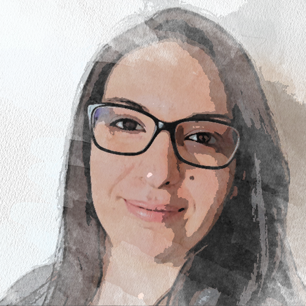

Grande appassionata del digitale. Mi ritengo una persona curiosa, creativa ed empatica. Cerco sempre di imparare cose nuove che possano migliorarmi. Da quando ho scoperto il mondo dell’UX/UI DESIGN ho capito sin da subito che era la strada giusta da intraprendere. Credo, che per poter creare la giusta esperienza possibile, bisogna capire le necessità degli utenti. Tra i miei obiettivi c’è quello di essere una brava ux/ui designer che sappia facilitare l’esperienza digital delle persone attraverso design accattivanti e soprattutto funzionali.
